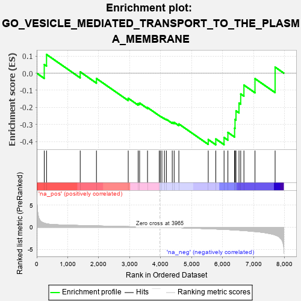
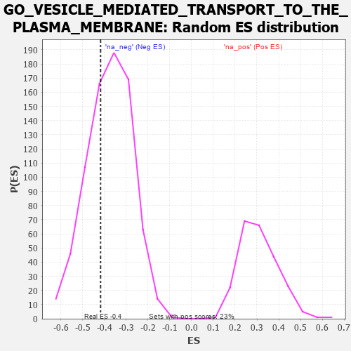

| | | Dataset | 7d |
| Phenotype | NoPhenotypeAvailable |
| Upregulated in class | na_neg |
| GeneSet | GO_VESICLE_MEDIATED_TRANSPORT_TO_THE_PLASMA_MEMBRANE |
| Enrichment Score (ES) | -0.41834357 |
| Normalized Enrichment Score (NES) | -1.1101574 |
| Nominal p-value | 0.34635416 |
| FDR q-value | 0.7350097 |
| FWER p-Value | 1.0 |
Table: GSEA Results Summary

Fig 1: Enrichment plot: GO_VESICLE_MEDIATED_TRANSPORT_TO_THE_PLASMA_MEMBRANE
Profile of the Running ES Score & Positions of GeneSet Members on the Rank Ordered List
| PROBE | GENE SYMBOL | GENE_TITLE | RANK IN GENE LIST | RANK METRIC SCORE | RUNNING ES | CORE ENRICHMENT | | 1 | NSF | | | 243 | 0.947 | 0.0505 | No |
| 2 | CNST | | | 317 | 0.792 | 0.1091 | No |
| 3 | EXOC1 | | | 1403 | 0.409 | 0.0076 | No |
| 4 | EXOC2 | | | 1927 | 0.317 | -0.0311 | No |
| 5 | RAB10 | | | 2952 | 0.157 | -0.1466 | No |
| 6 | SNX17 | | | 3272 | 0.110 | -0.1773 | No |
| 7 | RAB8A | | | 3319 | 0.102 | -0.1744 | No |
| 8 | EXOC5 | | | 3574 | 0.064 | -0.2009 | No |
| 9 | GGA1 | | | 3952 | 0.002 | -0.2482 | No |
| 10 | VPS35 | | | 3989 | -0.006 | -0.2522 | No |
| 11 | SYS1 | | | 4038 | -0.014 | -0.2570 | No |
| 12 | EXOC8 | | | 4120 | -0.026 | -0.2650 | No |
| 13 | EXOC4 | | | 4182 | -0.039 | -0.2693 | No |
| 14 | GRIP2 | | | 4372 | -0.071 | -0.2870 | No |
| 15 | VPS29 | | | 4433 | -0.082 | -0.2876 | No |
| 16 | SNX27 | | | 4585 | -0.115 | -0.2967 | No |
| 17 | VPS39 | | | 5533 | -0.329 | -0.3878 | Yes |
| 18 | VAMP7 | | | 5777 | -0.399 | -0.3842 | Yes |
| 19 | VAMP3 | | | 6043 | -0.487 | -0.3759 | Yes |
| 20 | GOPC | | | 6167 | -0.528 | -0.3462 | Yes |
| 21 | BBS2 | | | 6383 | -0.608 | -0.3212 | Yes |
| 22 | BBS1 | | | 6397 | -0.616 | -0.2701 | Yes |
| 23 | CSK | | | 6428 | -0.630 | -0.2199 | Yes |
| 24 | VAMP2 | | | 6525 | -0.672 | -0.1744 | Yes |
| 25 | CLN3 | | | 6580 | -0.699 | -0.1213 | Yes |
| 26 | CPLX1 | | | 6684 | -0.753 | -0.0698 | Yes |
| 27 | ARL3 | | | 7041 | -0.963 | -0.0321 | Yes |
| 28 | ANK3 | | | 7690 | -1.740 | 0.0354 | Yes |
Table: GSEA details [plain text format]

Fig 2: GO_VESICLE_MEDIATED_TRANSPORT_TO_THE_PLASMA_MEMBRANE: Random ES distribution
Gene set null distribution of ES for GO_VESICLE_MEDIATED_TRANSPORT_TO_THE_PLASMA_MEMBRANE